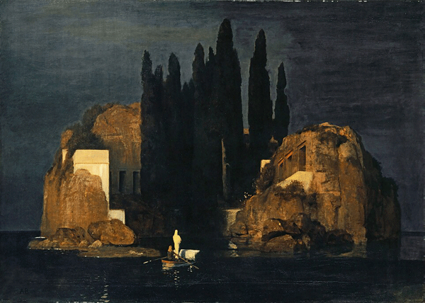
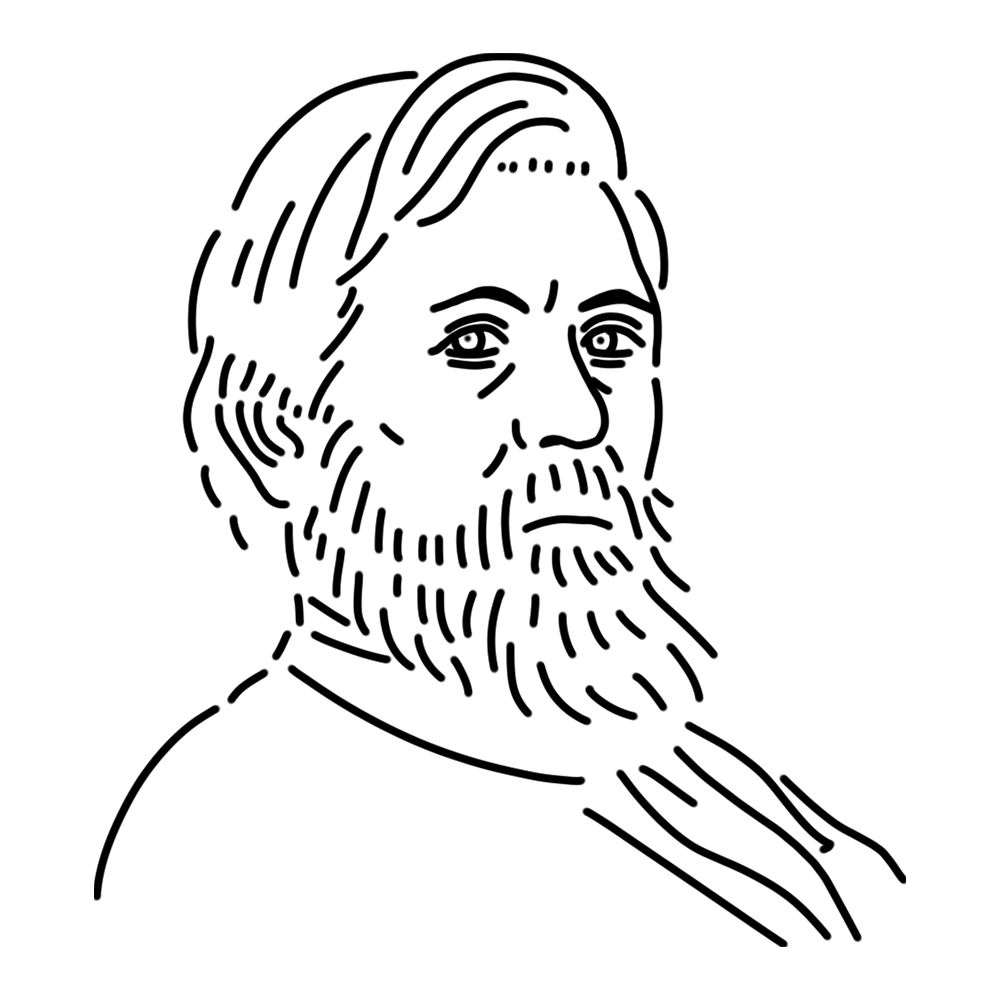

A Swiss muse of Symbolism, she created fantastical works incorporating mythical creatures such as monsters and dragons. She earns a living as a rower, and despite her quiet appearance, she is known for her lively salesmanship.
Switzerland
"Isle of the Dead"
"The Plague"
"Self-Portrait with Death Playing the Fiddle" etc.

A boat carrying a figure and what appears to be a coffin is heading towards a solemn island. The island is surrounded by large rocks, and cypress trees reminiscent of a cemetery stand tall against the dark sky.
It is an eerie painting, but it was popular, and postcards printed with it were also well received. Böcklin repeatedly painted this subject, and a total of six paintings have been confirmed.
Year
1880
Medium
Oil on canvas
Dimension
110.9 cm x 156.4 cm
Collection
Kunstmuseum Basel (Switzerland)

He was a leading Swiss Symbolist painter of the 19th century. He specialized in works imbued with an unsettling atmosphere inspired by ancient myths and fantasy creatures, and his "Isle of the Dead" in particular became a huge hit throughout Germany. It is said that it was even displayed in Hitler's own room.
All of his works exude a gloomy atmosphere, which may have been influenced by the early deaths of many of his children. He was a truly representative painter of the fin de siècle, having had a profound influence on subsequent painters and composers.
Arnold Böcklin
October 16, 1827
January 16, 1901(aged 73)